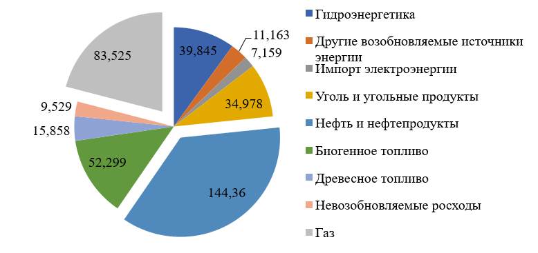

Роль и место австрийской нефтяной компании OMV в энергетической структуре ЕС и стратегические проекты с Россией
Черняев Максим Васильевич
РУДН (RUDN University)
m.chernyaev@mail.ru
---
Коваль Никита Викторович
РГУ Нефти и Газа имени И.М. Губкина
nikovik1996@mail.ru
Аннотация
РГУ Нефти и Газа имени И.М. Губкина
nikovik1996@mail.ru
Аннотация
Аннотация
Целью данного исследования является отражение роли и места крупнейшей в Центральной Европе австрийской нефтяной компании «Österreichische Mineralölverwaltung» («OMV») в энергетической структуре Европейского Союза (ЕС), а также анализ двусторонних российско-австрийских проектов, и выявление новых перспектив для сотрудничества. В рамках выделенной цели в работе проанализирован энергетический рынок ЕС, выделены внешние и внутренние барьеры, препятствующие его развитию, рассмотрены особенности функционирования и долгосрочные перспективы развития «OMV». Стоит отметить, что в 2017 году достаточно большую долю (20,9 % от общей произведенной энергии Европы) энергетики Европы формирует энергия, сгенерированная на электростанциях, использующих альтернативные источники энергии. Данный факт также проанализирован приведенной статье.
Ключевые слова:
энергетический рынок Европы, австрийская нефтяная компания «OMV», двусторонние отношения, стратегическое партнерство.
The role and place of the Austrian oil company OMV in the energy structure of the EU and strategic projects with Russia
Abstract
The main objective of this study is to reflect the role and place of Austria's largest Austrian oil company Österreichische Mineralölverwaltung (OMV) in the energy structure of the European Union (EU), as well as the analysis of bilateral Russian-Austrian projects, which will reveal new prospects for cooperation. To this end, the work analyzes the EU energy market, identifies external and internal barriers that impede its development, examines the functioning and long-term prospects for the development of OMV. It is worth noting that in 2017, a rather large share (20.9% of Europe's total energy production) of the European energy sector generates energy generated in power plants using alternative energy sources. This fact is also analyzed in this article.
Keywords:
European energy market, Austrian oil company OMV, bilateral relations, strategic partnership.
Если говорить о состоянии энергетического рынка в Европе, то прежде всего стоит ознакомиться с «Energy strategy 2050 в рамках европейской энергетической политики, которая отражает свою суть в тезисе: «Благосостояние народа, промышленная конкурентоспособность и стабильное функционирование общества зависят от надежности, безопасности и доступности энергии.» [1]. Наиболее интересной страной для анализа в рамках данной статьи является – Австрия, так как государство:
Долгосрочные цели энергетической политики Австрии изложены в Энергетической стратегии 2010 года (Energiestrategie Österreich). Цель стратегии состояла в том, чтобы «генерировать доступную энергию, которая обеспечит в достаточном количестве частное потребление, а также бизнес в будущем при соблюдении правил ЕС, опираясь на «Energy strategy 2050».
Энергетическая стратегия Австрии направлена на стабилизацию конечной энергии потребления в 2025 году на уровне 2005 года, то есть 1100 Дж. (26,3 млн. тонн н.э.), что на 2% ниже, чем в 2011 году. Стратегия опирается на три столпа для достижения этой цели - энергоэффективность, возобновляемые источники энергии и стабильность поставок. Она требуют более сильной взаимосвязи между экономическим ростом и потреблением энергии [2,3].
По данным европейской статистики - потребление энергии в Австрии за 2016 год составило 398,716 ГВт. Наиболее подробное распределение потребляемой энергии по генерирующим ресурсам отражено на Рисунке 1.
Перечисленные выше данные свидетельствуют о том, что на нефть и газ приходится 57,15 % от всей потребляемой энергии, в таком случае не трудно сделать вывод, что достаточно большую долю на австрийском энергетическом рынке занимают нефтяные и газовые компании.

Рисунок 1 - Потребление энергии в Австрии в 2016 году, ГВт.
Источник – составлено автором на основе [4].
Добыча нефти и природного газа является одним из важнейших факторов не только для энергетического сегмента, но и для австрийской экономики в целом. Благодаря тому Австрия покрывает около 1/6 своих потребностей в природном газе за счет собственной добычи, в отличии от нефти, где собственная добыча покрывает порядка 1/10 потребностей страны. Австрийский энергетический рынок обслуживается рядом компаний перечисленным в Таблице 1
Таблица 1. Структура Австрийского энергетического рынка
| Название | Деятельность | Доля государства |
|---|---|---|
| Verbund | Крупнейшая австрийская электроэнергетическая компания. | Правительство - 51% |
| EnergieAllianz | Вторая по величине электроэнергетическая компания. | Город Вена - 100% |
| OMV | Крупнейшая нефтяная компания, ведущая разведку и производство (E&P), переработку, оптовую и розничную продажи в Австрии и за границу. | Правительство - 31,5% |
| EconGas | Крупнейший поставщик газа, контролирующий Baumgarten и долгосрочные импортные контракты. | 5 австрийских компаний - 50% |
| Ряд небольших региональных и муниципальных поставщиков электроэнергии и газа, действующих в пределах Австрии. | ||
| Ассоциации электроэнергетики, нефти и газа, тепловой промышленности. | ||
Источник: составлено автором на основе [3,4].
Из вышеуказанного перечня наиболее привлекательной остается компания OMV, в связи с тем, что именно она играет очень важную роль в австрийском и европейском энергетическом сегментах.
В сферы деятельности Компании входит поиск добыча и продажа нефти и газа, инновационной энергии и высококачественной нефтехимии. OMV «Aktiengesellschaft» - одна из крупнейших промышленных компаний Австрии с объем продаж равным 20 млрд. евро и численностью персонала около 20 700 человек на конец 2017 года.
Upstream OMV имеет сильную базу в Румынии и Австрии и сбалансированный международный портфель активов включающий в себя шельф Северного моря, ближний Восток, Африку и Россию, как ключевые регионы долгосрочной стратегии развития. Суточная добыча в 2017 году составила около 348 барр. н.э./сутки. Downstream OMV управляет тремя нефтеперерабатывающими заводами с общей годовой мощностью переработки 17,8 млн. тонн и более 2000 АЗС в десяти странах на конец 2017 года. Австрийская нефтяная компания владеет сетью газопроводов в Австрии и хранилищами газа в Австрии и Германии. В 2017 году объемы реализации газа составили 113 TWh [5].
Наряду с высококачественным нефтяным розничным бизнесом и эффективным коммерческим бизнесом, она занимает лидирующие позиции на своих рынках.
OMV, как крупный игрок на европейском рынке, успешно реализовала запланированные программы роста на 2016 и 2017 год и 13 марта 2018 года утвердила стратегию до 2025 года, направленную на: постоянный рост и развитие компании, интернационализацию своего бизнеса в области Upstream и Downstream, а также расширение позиций на европейском газовом рынке и в нефтехимической промышленности.
По данным Международного энергетического агентства, глобальный спрос на энергию вырастет на 16% к 2030 году до 16 млрд. тонн нефтяного эквивалента в год в связи с глобального прироста населения. Нефть и газ по-прежнему будут составлять более 50% общего спроса на энергоресурсы в будущем. Ожидается, что мировой спрос на нефть вырастет на 7% до 4,7 млрд. тонн нефтяного эквивалента, главным образом за счет регионов Азиатско-Тихоокеанского региона и Ближнего Востока и Африки, в дополнение к 70-процентному росту спроса на нефтепродукты к 2030 году.
Спрос на природный газ в 2018 году продолжает расти по всему миру, а к 2030 году ожидается увеличение на 23% до 3,7 млрд. тонн нефтяного эквивалента [6].
OMV Downstream еще больше сил направляет на укрепление своих конкурентных позиции в соответствии со снижающимся спросом на топливо и растущим спросом на нефтепродукты в Европе. К 2025 году около 1 млрд. евро будут инвестированы в нефтеперерабатывающие заводы Группы OMV, что позволит производить все более качественные нефтехимические продукты и авиационное топливо. Для получения достаточного уровня дохода, компании необходимо до 2025 года увеличить объём реализации в Европе произведенной продукции до 50% от общего объёма производства на всех заводах Группы [7,8].
Переход от угля будет означать увеличение спроса на природный газ - более экологически чистый вариант - на европейском рынке. Вместе с резким ростом спроса на импорт это приведет к увеличению рыночного потенциала в среднесрочной и долгосрочной перспективе. Таким образом, OMV стремится стать сильным игроком на рынке с северо-запада в Юго-Восточную Европу.
Продажи газа к 2025 году должны вырасти до 20 млрд. м3. Здесь OMV стремится обеспечить 20% долю немецкого рынка к 2025 году. Другие планы включают подачу дополнительного акционерного газа из Норвегии и Румынии в европейскую сеть. Строительство Nord Stream 2 имеет решающее стратегическое значение для OMV, поскольку именно он обеспечит последовательные долгосрочные поставки газа в Европу в совокупности с Центрально-европейским газовым узлом в Баумгартене и трубопроводной сетью Gas Connect Austria [7]. Почти 5 млрд. евро были направлены на финансирование международного роста в перерабатывающем секторе путем модернизации заводов к 2025 году. Учитывая глобальные недостатки производственных мощностей, OMV намерена в долгосрочной перспективе удвоить свои мощности НПЗ.
Сотрудничество OMV с Россией относится к 1968 году, когда оно стало первой европейской компанией, заключившей с ней соглашение о поставках газа. Это новаторское движение предотвратило нехватку предложения на быстро развивающемся газовом рынке Европы и послужило моделью для нескольких аналогичных соглашений с западноевропейскими компаниями. Советский Союз оставался надежным поставщиком, а новые соглашения о поставках газа были подписаны в 1974, 1975 и 1982 годах. После десятилетий сильного сотрудничества и надежных поставок в 1994 году OMV распространила эти соглашения с российским «Газпромом» до 2006, 2012 годов и даже до тех пор, пока 2027. Интересной особенностью австрийской OMV является ее открытость в сотрудничестве с Россией, не смотря на политическую ситуацию с 2014 года.
В декабре 2016 года OMV заключила обязательное «Основное соглашение» с «Газпромом» для потенциальной сделки по обмену активами. Предполагается, что сделка по обмену будет состоять из приобретения 24,98% доли в развитии Ачимовских залежей в Уренгойском газоконденсатном месторождении OMV в обмен на 38,5% участия «Газпрома» в OMV (NORGE) AS. Обмен активами предоставит OMV доступ к Ачимовскому водохранилищу на Уренгойском месторождении в Западной Сибири. Ожидается, что производство начнется в 2020 году [9].
В 2017 году OMV приступила к созданию полноценной организации «HUB» в Санкт-Петербурге, которая отвечает за операции OMV в России.
В 2017 году подписка OMV приобрела долю в 24,99% в газовом месторождении Южно-Русское, расположенном в Западной Сибири от Uniper SE. Приобретение построило новую основную область, Россия, в портфолио OMV Upstream, добавив 100 000 барр. н.э./сут. к производству OMV [7].
Южно-Русское месторождение является одним из крупнейших газовых месторождений в России, расположенных в Западной Сибири. Текущая добыча из данного месторождения составляет 25 млрд. м3 в год. Срок действия лицензии истекает к концу 2043. Газ из этой современной и технически передовой области является ключевым ресурсом для газопровода Nord Stream, который напрямую снабжает Германию российским газом. Южно-Русское месторождение стало основным источником пополнения запасов в портфеле OMV. Сделка позволяет OMV достичь стратегической цели 100-процентного коэффициента замещения резервов на период около пяти лет на основе объема производства OMV в 2016 году [7].
Еще одним важными и стратегическим проектом между OMV и Россией, стало подписание договора Nord Stream 2 AG в 2017 году, а также дальнейшее финансирование в его строительстве. Проект Nord Stream 2 - расширение существующего магистрального газопровода Nord Stream, связывающего Россию и Германию. Трубопровод будет запущен с российского побережья вдоль ложа Балтийского моря до берега Германии. Он будет обходить транзитные государства - Украину, Беларусь, Польшу и другие страны Восточной Европы и Балтии. Газопровод пройдет через исключительные экономические зоны и территориальные воды пяти государств - России, Финляндии, Швеции, Дании и Германии. Длина трубопровода составит более 1200 км, пропускная способность - 55 млрд. м3 в год. Ожидается, что трубопровод будет введен в эксплуатацию в конце 2019 года [10,11].
Как стало известно ранее, единственной страной, не подписавшей соглашение, стала Дания. Nord Stream 2 AG, оператор проекта газопровода Nord Stream 2, разработал маршрут газопровода в обход Дании без дополнительных затрат на проект (общая стоимость проекта составит 9,5 млрд. евро), о чем стало известно в августе 2018 года [11].
Подводя итоги проделанной работы, выделим несколько основных выводов, основывающихся на анализе роли и места австрийской нефтяной компании OMV в энергетической структуре ЕС и стратегических проектов с Россией, так:
Литература
1. Энергетическая дорожная карта 2050. Документ утвержден Европейской комиссией 15 декабря 2011 года. Европейская комиссия.
2. Энергетическая Политика стран Международного Энергетического Агентства. Энергетическая политика Австрии 2007. Международное Энергетическое Агенство.
3. Энергетическая Политика стран Международного Энергетического Агентства. Энергетическая политика Австрии 2014. Международное Энергетическое Агенство.
4. Брошюра «Возобновляемая энергия в цифрах 2017». Федеральное министерство по устойчивому развитию и туризму.
5. Годовой отчет OMV 2017. Официальный сайт компании OMV.
6. Международное энергетическое агентство «IEA»
7. Официальный сайт Австрийской нефтяной компании OMV
8. Информационное агентство России «ТАСС»
9. ««Газпром» нанял PwC для налогового сопровождения сделки с австрийской OMV». Информационное агентство «Интерфакс».
10. «Глава OMV: даже в непростые времена нужно оставаться с друзьями». Информационное агентство «ТАСС».
11. «Nord Stream 2 developing alternative pipeline route — OMV». Информационное агентство «ТАСС».
12. Министерство энергетики России
13. «Employment Effects of selected scenarios from the Energy roadmap 2050». Европейская комиссия.
14. «AUSTRIAN ELECTRICITY DISCLOSURE REPORT 2017 – SUMMARY» («Австрийский электроэнергетический отчет 2017»). Австрийская энергетическая компания «E-Control»